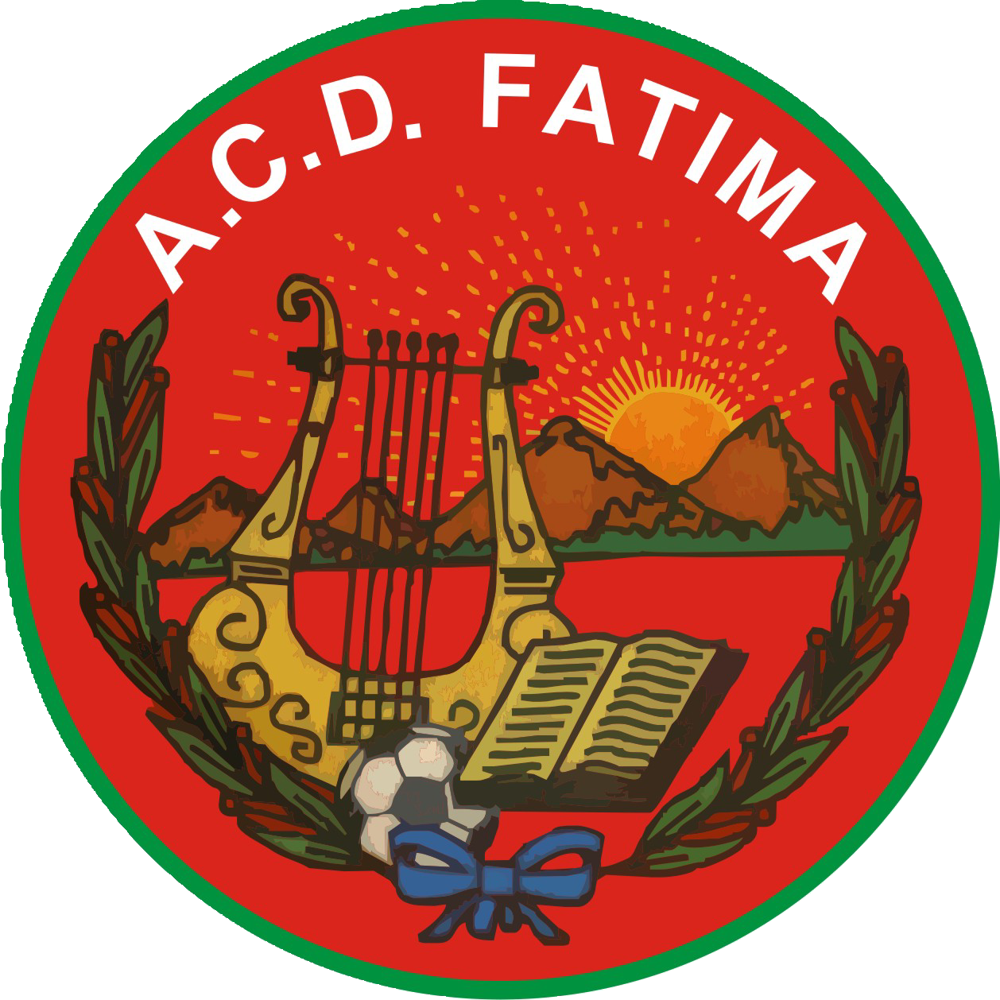

Capitán actual
🎖️
Sergio Rodríguez Martín
Primer Capitán
Ranking de votos (en directo)
1º puesto → Segundo Capitán · 3º puesto → Tercer Capitán

Elecciones Segundo y Tercer Capitán · Temporada 2026/2027
1º puesto → Segundo Capitán · 3º puesto → Tercer Capitán